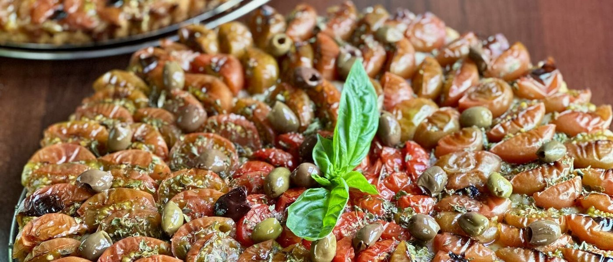
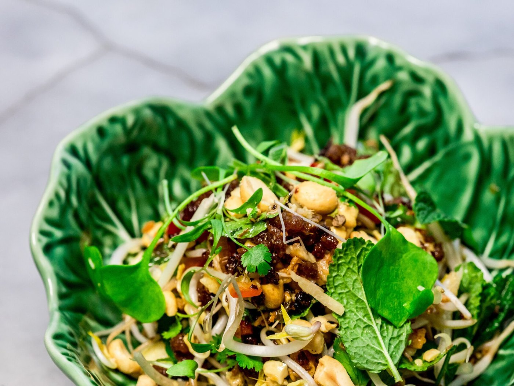
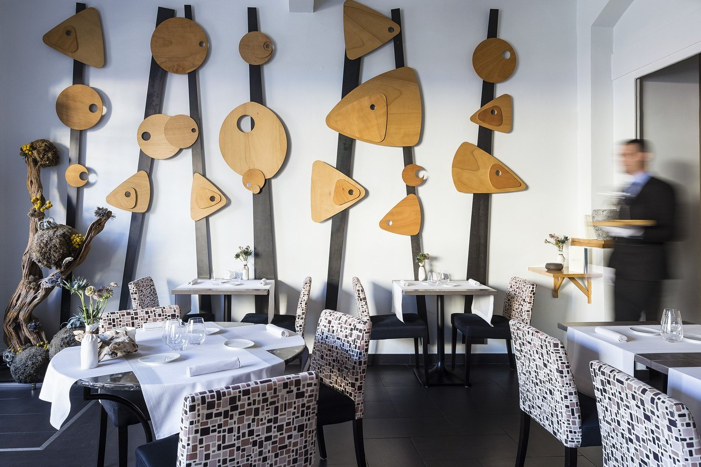
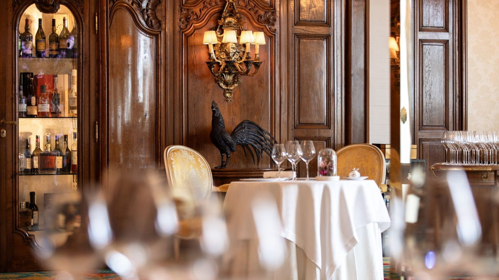
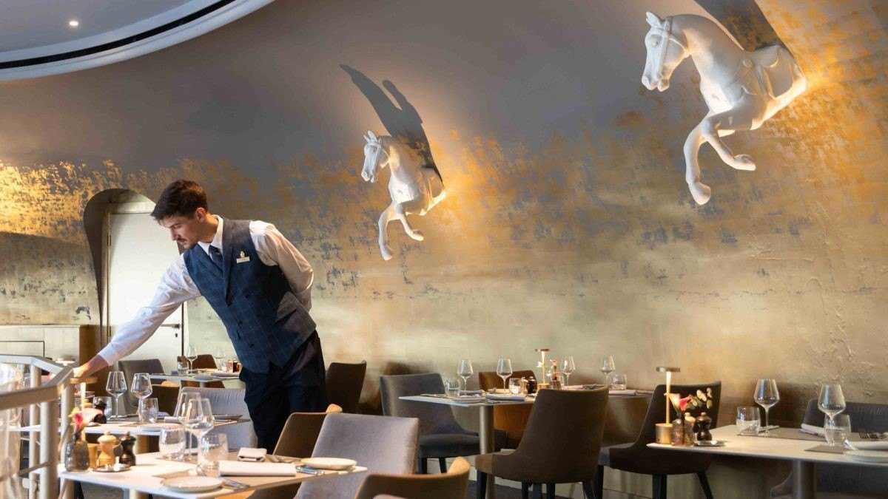
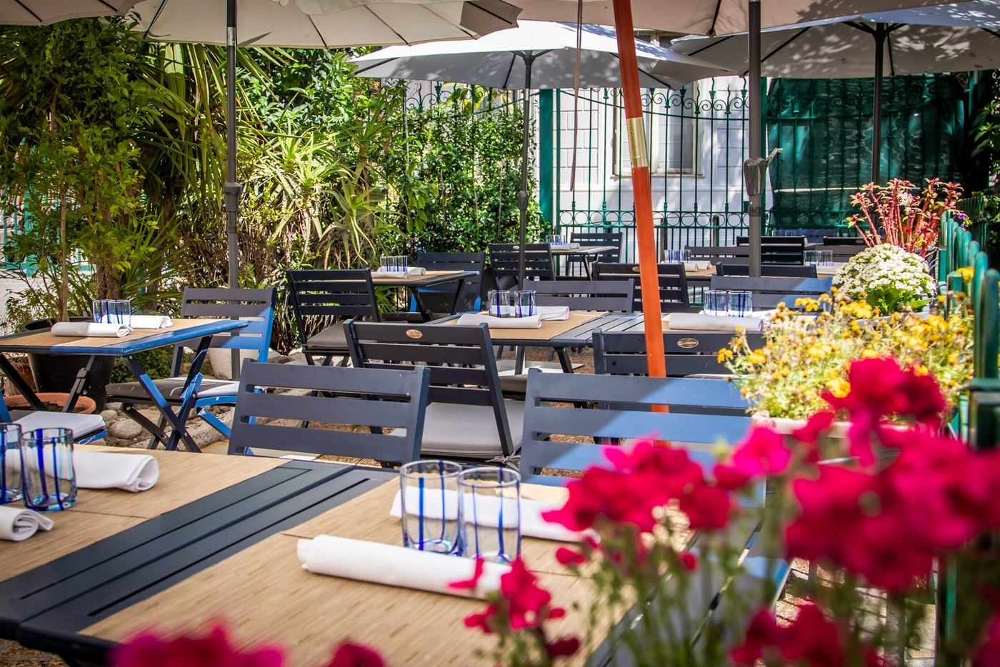
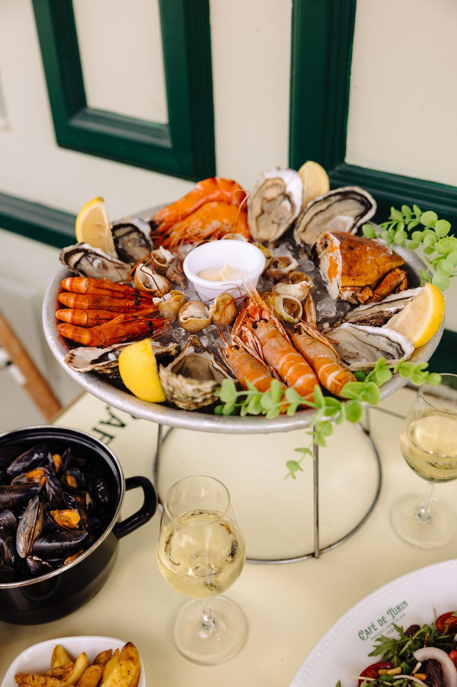

Les 8 meilleurs restaurants de Nice en 2026
Du plat à 16 € au menu à 330 €, une ville sans milieu de gamme. Avec un fil qui relie la table la plus modeste de la sélection à la plus solennelle, et une étoile que beaucoup attribuent encore à une maison qui l'a perdue.

Nice a deux scènes qui ne se parlent presque pas : un répertoire nissart tenu par des maisons de quartier, et une gastronomie créative parmi les plus denses de France pour une ville de cette taille. Voici huit tables qui couvrent les deux, avec pour chacune l'adresse, les jours de fermeture et les prix relevés à la source.
L'essentielNice à table en 2026
- Une ville sans milieu de gamme : les plats de la sélection s'arrêtent à 23 € d'un côté, les menus commencent à 95 € de l'autre. Entre les deux, presque rien.
- Le fil de l'histoire : le chef de La Merenda, la plus modeste table de cette page, a tenu deux étoiles au Chantecler, la plus solennelle.
- Trois maisons étoilées ici : Flaveur (deux étoiles), Les Agitateurs et Le Chantecler (une chacune).
- Keisuke Matsushima n'est plus étoilé. L'étoile de 2006 a été perdue, la maison reste au guide sans distinction.
Ce que nous avons vérifié
À Nice, ce qui se périme dans les sélections en ligne, ce sont les distinctions et les jours de fermeture. Nous avons repris chaque adresse et chaque horaire aux sites officiels des maisons, et relevé les tarifs des menus quand ils sont publiés. Quatre maisons ne publient pas leurs prix : nous l'écrivons plutôt que d'avancer une fourchette.
Trois faits corrigés au passage, parce qu'ils circulent partout. La Merenda prend désormais ses réservations en ligne et ouvre du lundi au vendredi. Les Agitateurs ne sont pas dans le Vieux-Nice mais dans le quartier du Pin. Et Keisuke Matsushima n'a plus d'étoile. Le reste relève des critères de notre grille.
Les 8 tables
-
01
La Merenda
Vieux-Nice · Cuisine niçoise
Dominique Le Stanc
Une tarte à la tomate, à La Merenda. Photo La Merenda. Quelques couverts dans une petite rue derrière le cours Saleya, une carte qui change avec le marché, et un chef qui a renoncé à tout le reste. Dominique Le Stanc a dirigé les cuisines du Negresco, où il tenait deux étoiles au Chantecler, avant de reprendre ce bistrot et de revenir, selon ses mots, à l'essentiel. C'est la même ville, à deux kilomètres et à deux cents euros d'écart.
Au menu, le répertoire nissart sans arrangement : pissaladière, beignets de fleurs de courgette, sardines farcies, pâtes au pistou, stockfish, daube mijotée, tourte de blettes. La maison fait partie du paysage depuis plus de soixante ans.
Une précision utile, parce que la légende dit le contraire partout : La Merenda prend désormais les réservations en ligne, sur son propre site. Il n'y a toujours pas de numéro de téléphone publié, mais l'histoire du « il faut se présenter en personne » n'est plus vraie. Et la maison est ouverte du lundi au vendredi, pas du mardi au vendredi comme on le lit souvent.
Pour qui ? Ceux qui veulent comprendre ce qu'est la cuisine niçoise avant d'aller ailleurs. Salle minuscule : réservez.
- Adresse4 rue Raoul Bosio, 06300 Nice
- Ouverturedu lundi au vendredi, 12 h à 14 h et 19 h à 21 h 30
- Réservationen ligne sur lamerenda.net ; aucun téléphone publié
- Cartenon publiée en ligne, elle change chaque jour
-
02
Les Agitateurs
Quartier du Pin · Cuisine d'auteur
1 étoile Michelin 2026
Une assiette des Agitateurs, rue Bonaparte. Photo Les Agitateurs. Samuel Victori et Juliette Busetto, tous deux passés par l'Institut Paul Bocuse, ont ouvert cette maison en 2018 rue Bonaparte. L'étoile est tombée en 2021 et le Guide Michelin 2026 la confirme. Victori a été second au Passage 53 à Paris ; sa cuisine tient, selon la formule de la maison, un pied dans la garrigue et l'autre dans la Méditerranée.
Sur la carte, rien à la carte justement : quatre menus, et c'est tout. Menu d'affaire ou rien à faire à 95 € et Éclat de saison à 145 € au déjeuner du samedi et du dimanche ; Premier voyage à 135 € et Horizons infinis à 185 € au dîner. Les menus évoluent selon les arrivages.
Une correction géographique, parce que les sélections la répètent : l'adresse n'est pas dans le Vieux-Nice mais dans le quartier du Pin, entre la place Garibaldi et le port, à une dizaine de minutes de la vieille ville.
Pour qui ? Ceux qui viennent pour un repas construit et non pour un plat. Fermé le mardi et le mercredi, salle petite, réservation nécessaire.
- Adresse24 rue Bonaparte, 06300 Nice
- Téléphone09 87 33 02 03
- Ouverturedu jeudi au lundi soir ; midi et soir le samedi et le dimanche ; fermé mardi et mercredi
- Menus95 € et 145 € au déjeuner, 135 € et 185 € au dîner
-
03
Flaveur
Nice centre · Gastronomie créative
2 étoiles MichelinGault&Millau 17,5/20
La salle de Flaveur, rue Gubernatis. Photo Flaveur. Gaël et Mickaël Tourteaux ont fait la même école hôtelière à Nice et le même apprentissage au Negresco avant d'ouvrir rue Gubernatis. Première étoile en 2011, deuxième en 2018, et les deux sont confirmées dans le guide 2026. Gault&Millau leur donne quatre toques et 17,5 sur 20.
La salle est petite et n'a rien d'un décor de palace : des poissons de bois stylisés courent sur le mur, la mosaïque au sol rappelle l'eau, on est très près de ses voisins. La cuisine part du produit méditerranéen pour aller chercher ailleurs, avec des associations franches qui restent lisibles.
Les tarifs sont publics et il vaut mieux les connaître avant de réserver : déjeuner en quatre services à 195 €, menu Exploration à 235 € en six services et 290 € en sept, menu Toutes Latitudes en neuf services à 330 €. Accords mets et vins de 85 à 160 € en sus.
Pour qui ? Les grandes occasions, et ceux qui veulent la table la plus distinguée de la ville. Réservez longtemps à l'avance.
- Adresse25 rue Gubernatis, 06000 Nice
- Téléphone04 93 62 53 95
- Menus195 € au déjeuner, de 235 à 330 € au dîner
- Distinctions2 étoiles au Guide Michelin, 4 toques et 17,5/20 au Gault&Millau
-
04
Le Chantecler
Promenade des Anglais · Haute gastronomie, Le Negresco
1 étoile MichelinVirginie Basselot, MOF
La salle du Chantecler, au Negresco, et son coq de bois. Photo Grégoire Gardette pour Le Negresco. La table gastronomique du Negresco porte le nom du coq, et l'oiseau veille effectivement sur les boiseries. Le décor est celui d'un hôtel devenu musée : boiseries du château de Chaintré, cuirs de Malines, portrait de Louis XV par La Tour et de Marie Leszczynska par Nattier, compositions florales renouvelées par Hervé Frézal, lui aussi Meilleur Ouvrier de France. Un pianiste, Luc Escolano, joue chaque soir.
Virginie Basselot, Meilleur Ouvrier de France 2015, tient la maison depuis 2018. Sa cuisine part des producteurs de l'arrière-pays et de la côte, et se refuse au folklore niçois autant qu'au classicisme de palace.
Le prix, en revanche, ne se trouve pas. Le Negresco ne publie pas ses menus en ligne ; les plateformes de réservation estiment l'addition moyenne autour de 299 € hors boisson, ce qui donne un ordre de grandeur et non un tarif. Appelez avant de réserver si le budget compte.
Pour qui ? Les soirées d'exception. Ouvert du mercredi au dimanche, au dîner seulement, réservations de 19 h à 21 h 30, tenue élégante demandée.
- Adresse37 promenade des Anglais, 06000 Nice, hôtel Le Negresco
- Téléphone04 93 16 64 10
- Ouverturedu mercredi au dimanche, dîner uniquement, réservations de 19 h à 21 h 30
- Prixmenus non publiés en ligne ; addition moyenne estimée à 299 € par les plateformes
-
05
La Rotonde
Promenade des Anglais · Brasserie, Le Negresco
Carte signée Virginie Basselot
La salle de La Rotonde, au Negresco, et ses chevaux de manège. Photo Grégoire Gardette pour Le Negresco. Dans le même hôtel, une porte plus loin, La Rotonde joue un tout autre registre. La salle est construite comme un manège : chevaux de bois suspendus, fresque circulaire, lumière chaude. C'est la pièce la plus photographiée du Negresco, et l'une des rares de ce niveau où l'on entre sans cérémonie.
Le point que les listes oublient : la carte est signée Virginie Basselot, la même cheffe étoilée qu'au Chantecler. On y mange une cuisine méditerranéenne franche, avec des clins d'œil au répertoire niçois, à un tarif de brasserie d'hôtel plutôt que de table gastronomique.
Attention à l'horaire, souvent donné comme un service continu : ce sont trois services distincts, petit déjeuner de 7 h à 10 h 30, déjeuner de midi à 14 h, dîner de 19 h à 22 h. La terrasse donne sur la promenade des Anglais et la mer.
Pour qui ? Les familles, les déjeuners, et ceux qui veulent le cadre du Negresco sans le budget du Chantecler.
- Adresse37 promenade des Anglais, 06000 Nice, hôtel Le Negresco
- Téléphone04 93 16 64 11
- Ouverturetous les jours ; 7 h à 10 h 30, 12 h à 14 h, 19 h à 22 h
- Carteconçue par Virginie Basselot ; prix non publiés en ligne
-
06
Keisuke Matsushima
Nice centre · Méditerranée et technique japonaise
Terrasse rue de France
La terrasse de Keisuke Matsushima, rue de France. Photo Keisuke Matsushima. Kei Matsushima s'est installé à Nice au début des années 2000 et n'en est jamais reparti. Sa cuisine, qu'il dit lui-même « inclassable », part des produits méditerranéens pour les traiter avec des cuissons japonaises et une finesse italienne. La salle, une quarantaine de couverts, est claire et sobre, avec une terrasse sur la rue de France.
Une mise au point s'impose, car elle circule mal. Le restaurant a été étoilé en 2006, l'un des tout premiers en France pour un chef japonais ; il ne l'est plus. Il figure toujours à la sélection du Guide Michelin, sans distinction étoilée. Présenter aujourd'hui cette table comme « la cuisine d'un chef étoilé au prix d'un bistrot » est donc doublement inexact : l'étoile a été perdue, et les menus ne sont pas publiés en ligne.
Cela n'enlève rien à ce qui s'y passe, mais change ce qu'on va y chercher : une cuisine de chef confirmé, singulière dans le paysage niçois, et non une bonne affaire garantie.
Pour qui ? Ceux qui veulent sortir du répertoire nissart sans quitter la ville. Fermé le samedi midi, le dimanche et le lundi.
- Adresse22 ter rue de France, 06000 Nice
- Téléphone04 93 82 26 06
- Ouverturedu mardi au samedi ; fermé le samedi midi, le dimanche et le lundi
- Distinctionau Guide Michelin, sans étoile ; étoilé de 2006 aux années 2010
-
07
Le Grand Café de Turin
Place Garibaldi · Coquillages et crustacés
Ouvert depuis 1908
Un plateau de fruits de mer au Café de Turin, place Garibaldi. Photo Café de Turin. Sous les arcades ocre de la place Garibaldi, la même maison sert des coquillages depuis 1908. On y vient pour les huîtres, les palourdes, les oursins en saison, les crevettes et les plateaux, ouverts au banc par un écailler qui travaille dehors, à la vue de tous.
L'intérieur est une brasserie sans mise en scène : banquettes, chaises de bistrot, service rapide. La terrasse, sur l'une des plus belles places de la ville, est le vrai décor. La carte est courte et ne s'excuse pas de l'être.
Une précision d'horaire, souvent recopiée de travers : la maison ouvre tous les jours de 10 h à 22 h, et non dès 8 h.
Pour qui ? Les amateurs de coquillages, les familles, les déjeuners en terrasse. Le service peut être expéditif aux heures de pointe : c'est le prix de l'affluence.
- Adresse5 place Garibaldi, 06300 Nice
- Téléphone04 93 62 29 52
- Ouverturetous les jours, 10 h à 22 h
- Spécialitéshuîtres, coquillages, plateaux de fruits de mer
-
08
L'Escalinada
Vieux-Nice · Cuisine nissarde
Un quart de siècle rue Pairolière
La terrasse de L'Escalinada, rue Pairolière. Photo L'Escalinada. Rue Pairolière, une des rues les plus vivantes du Vieux-Nice, L'Escalinada sert des recettes de grand-mère niçoises depuis un quart de siècle. Nappes à carreaux rouges, tables serrées sur la rue, ardoise à l'entrée : le décor tient en trois éléments et ne cherche rien d'autre.
La carte est longue et assume le répertoire dans son entier, y compris ce qui fait fuir : poivrons grillés, beignets de courgette, poulpe à la niçoise, tripes, daube, testicules de mouton panés, gnocchis maison, raviolis niçois, pâtes fraîches, panisses. C'est l'adresse la plus complète de cette page sur la cuisine nissarde de tous les jours, et la moins chère : les plats se situent entre 16 et 23 €.
Le point pratique que les listes oublient : la maison est fermée le mercredi, et sert en continu de midi à 22 h 30 les autres jours, ce qui en fait la seule adresse de cette sélection où l'on peut manger à 16 h.
Pour qui ? Les budgets serrés, les familles, et tous ceux qui veulent goûter le répertoire complet plutôt qu'une sélection rassurante.
- Adresse22 rue Pairolière, 06300 Nice
- Téléphone04 93 62 11 71
- Ouverturetous les jours sauf le mercredi, service continu de 12 h à 22 h 30
- Repère de carteplats de 16 à 23 €
Le trou du milieu de gamme
En alignant les prix publiés par les huit maisons, un vide apparaît. D'un côté, L'Escalinada plafonne à 23 € le plat et le Grand Café de Turin reste dans les mêmes eaux si l'on s'en tient aux coquillages. De l'autre, le premier menu des Agitateurs est à 95 € et celui de Flaveur à 195 €. Entre 25 et 95 €, cette sélection ne propose qu'une adresse, La Rotonde, et encore : la maison ne publie pas ses prix.
Ce n'est pas une particularité niçoise absolue, mais l'écart est ici plus net que dans les villes comparables. À Lyon, notre guide Où manger à Lyon montre une continuité de tarifs bien remplie entre le bouchon et l'étoile ; à Strasbourg, nos winstubs occupent précisément ce créneau intermédiaire. Nice, elle, saute la marche.
Cinq adresses sur huit dans le centre historique
La géographie de cette sélection tient en deux pôles. La Merenda, L'Escalinada, le Grand Café de Turin, Les Agitateurs et Flaveur sont dans le Vieux-Nice ou à moins d'un quart d'heure à pied ; Keisuke Matsushima, Le Chantecler et La Rotonde sont à l'ouest, du côté de la promenade des Anglais. Il n'y a rien entre les deux, ou presque, et rien du tout dans les quartiers nord.
Concrètement, pour un séjour de deux jours : un déjeuner et un dîner dans le périmètre du Vieux-Nice, un repas de l'autre côté. Les distances se font à pied dans le premier cas, en tram ou en taxi dans le second.
Choisir selon le budget et l'occasion
Les montants ci-dessous sont ceux publiés par les maisons, relevés le 31 août 2026, et non des additions moyennes constatées. Le tableau est classé du moins cher au plus cher.
| Restaurant | Quartier | Prix relevés | Cuisine | À savoir |
|---|---|---|---|---|
| L'Escalinada | Vieux-Nice | Plats de 16 à 23 € | Cuisine nissarde | Fermé le mercredi ; service continu |
| Le Grand Café de Turin | Place Garibaldi | Carte non publiée en ligne | Coquillages | Ouvert depuis 1908, tous les jours 10 h à 22 h |
| La Merenda | Vieux-Nice | Carte non publiée en ligne | Cuisine niçoise | Dominique Le Stanc ; du lundi au vendredi |
| La Rotonde | Promenade des Anglais | Carte non publiée en ligne | Brasserie | Carte signée Virginie Basselot ; tous les jours |
| Keisuke Matsushima | Nice centre | Menus non publiés en ligne | Méditerranée et Japon | Au Guide Michelin, sans étoile ; fermé dimanche et lundi |
| Les Agitateurs | Quartier du Pin | 95 à 185 € | Cuisine d'auteur | 1 étoile depuis 2021 ; fermé mardi et mercredi |
| Flaveur | Nice centre | 195 à 330 € | Gastronomie créative | 2 étoiles, 17,5/20 au Gault&Millau |
| Le Chantecler | Promenade des Anglais | Addition moyenne estimée à 299 € | Haute gastronomie | 1 étoile, Virginie Basselot ; dîner seulement |
Questions fréquentes
Quel est le meilleur restaurant du Vieux-Nice ?
Cela dépend du budget. Pour la cuisine niçoise portée par un ancien chef doublement étoilé, La Merenda, 4 rue Raoul Bosio, tenue par Dominique Le Stanc. Pour le répertoire nissart complet au tarif le plus doux, L'Escalinada, 22 rue Pairolière, dont les plats vont de 16 à 23 €. Pour les coquillages, le Grand Café de Turin, place Garibaldi, à la lisière nord de la vieille ville.
Quelles sont les tables étoilées de Nice en 2026 ?
Dans cette sélection, trois maisons portent une distinction du Guide Michelin en 2026 : Flaveur, rue Gubernatis, avec deux étoiles, obtenues en 2011 puis en 2018 ; Les Agitateurs, rue Bonaparte, avec une étoile depuis 2021 ; et Le Chantecler, au Negresco, avec une étoile. Une précision qui circule mal : Keisuke Matsushima, étoilé en 2006, ne l'est plus ; il reste à la sélection du guide, sans distinction étoilée.
Combien coûte un repas dans les grandes tables de Nice ?
Les tarifs publiés le 31 août 2026 sont les suivants. Aux Agitateurs, quatre menus : 95 € et 145 € au déjeuner du week-end, 135 € et 185 € au dîner. À Flaveur, 195 € au déjeuner et de 235 à 330 € au dîner, accords mets et vins de 85 à 160 € en sus. Le Chantecler ne publie pas ses menus en ligne ; les plateformes de réservation estiment l'addition moyenne autour de 299 €.
Où manger niçois sans se ruiner à Nice ?
L'Escalinada, 22 rue Pairolière, affiche des plats de 16 à 23 € et sert en continu de midi à 22 h 30, sauf le mercredi. Le Grand Café de Turin, place Garibaldi, reste abordable si l'on s'en tient aux coquillages plutôt qu'aux grands plateaux. La Merenda ne publie pas sa carte, qui change chaque jour selon le marché.
Où manger des fruits de mer à Nice ?
Au Grand Café de Turin, 5 place Garibaldi, ouvert depuis 1908 et tous les jours de 10 h à 22 h. Huîtres, palourdes, oursins en saison, crevettes et plateaux, ouverts par un écailler qui travaille au banc, dehors. La terrasse sous les arcades de la place Garibaldi est l'une des plus agréables de la ville.
Quelles tables ouvrent le samedi et le dimanche à Nice ?
Le Grand Café de Turin et La Rotonde ouvrent tous les jours ; L'Escalinada tous les jours sauf le mercredi. Les Agitateurs servent midi et soir le samedi et le dimanche mais ferment le mardi et le mercredi. Le Chantecler ouvre du mercredi au dimanche, au dîner seulement. La Merenda ferme le week-end : elle n'ouvre que du lundi au vendredi. Keisuke Matsushima ferme le samedi midi, le dimanche et le lundi.
Faut-il réserver à Nice, et comment ?
Oui pour les six tables assises de cette page. La Merenda, longtemps réputée n'accepter que les réservations en personne, prend désormais les siennes en ligne sur son propre site et ne publie toujours pas de numéro de téléphone. Flaveur et Les Agitateurs, qui ont de très petites salles, demandent de s'y prendre plusieurs semaines à l'avance. Le Chantecler prend ses réservations entre 19 h et 21 h 30 et demande une tenue élégante.
Sources
Adresses, distinctions, jours d'ouverture et prix relevés le 31 août 2026 sur les sites officiels des maisons et sur les pages ci-dessous.
- Guide Michelin, les distinctions 2026 de Flaveur, des Agitateurs et du Chantecler, et la fiche de Keisuke Matsushima.
- Gault&Millau, les toques et la note de Flaveur.
- La Merenda, Les Agitateurs, Flaveur, Le Negresco, Keisuke Matsushima, Café de Turin et L'Escalinada, sites officiels, pour les adresses, les horaires et les tarifs.
Une maison qui change de chef, un jour de fermeture qui bouge, une distinction obtenue ou perdue : signalez-le nous. Les corrections sont datées sur la page.
À lire aussi
À l'échelle du pays, notre palmarès des 15 meilleurs restaurants de France. Sur la même façade méditerranéenne, nos 8 meilleurs restaurants de Marseille, et plus à l'ouest nos 6 meilleures tables de Biarritz.
Pour comparer avec les grandes scènes du nord, les 25 meilleurs restaurants de Paris et notre guide Où manger à Lyon.
Les photographies d'établissement sont fournies par les maisons et publiées avec leur accord. Toute maison souhaitant le retrait d'une image peut nous écrire : elle est retirée sans délai. Aucune des maisons citées dans cet article n'a été visitée par la rédaction à ce jour.